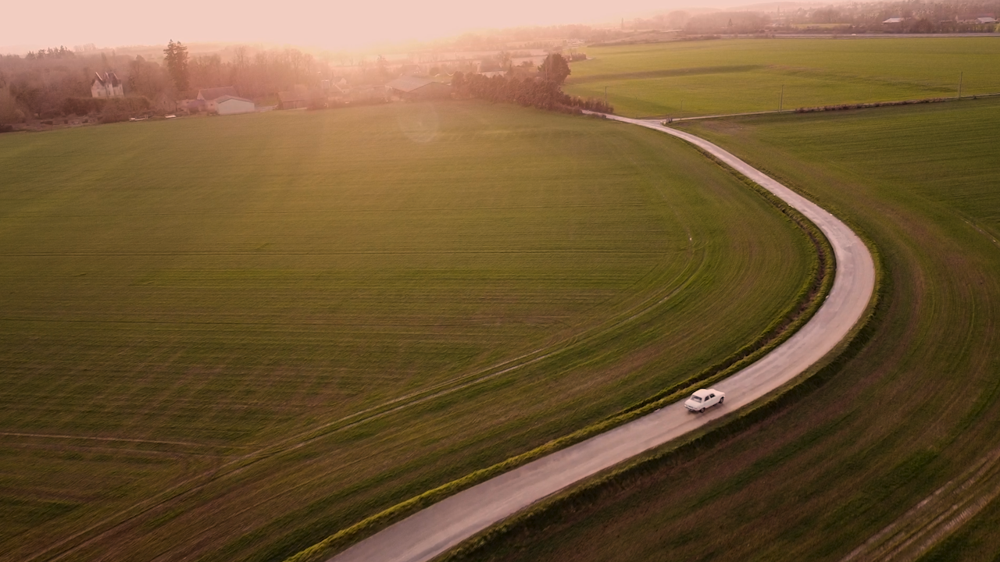
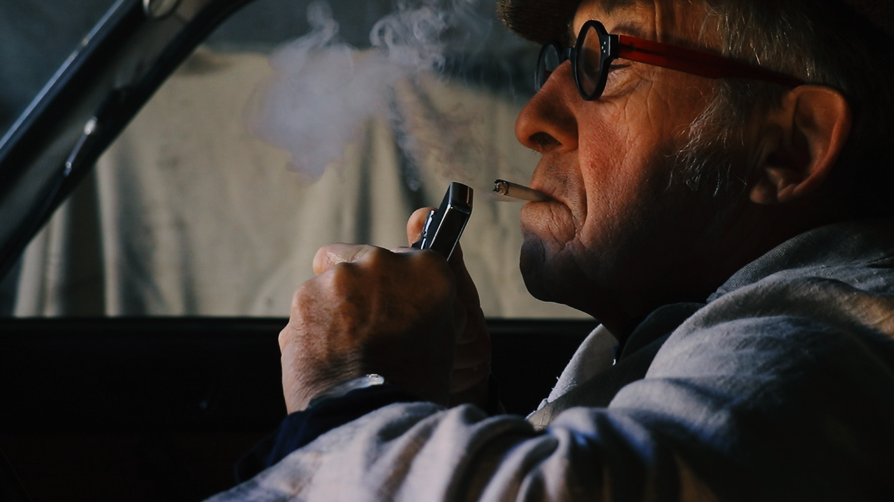
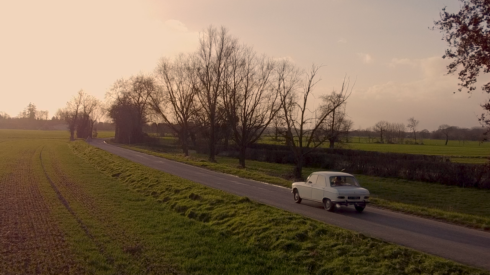
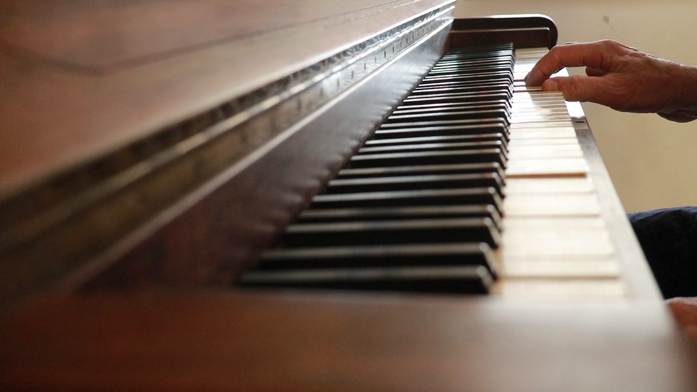
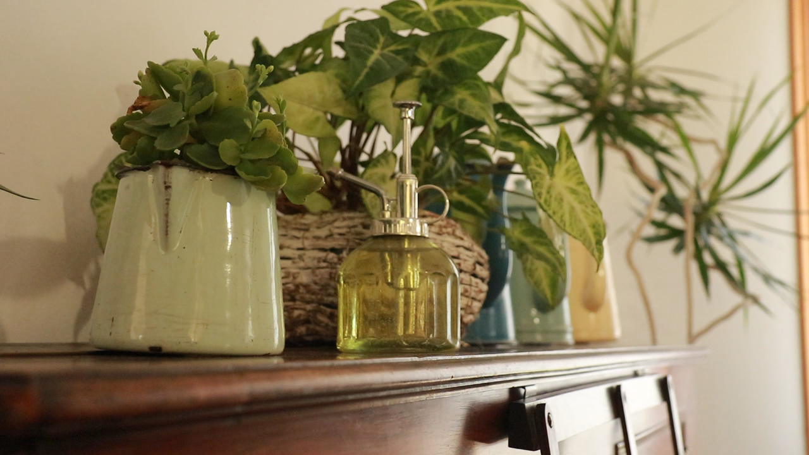

Flashback pour une valse
← retour
Avec la co-réalisatrice nous avons fait le choix de mettre en scène deux personnes âgées, jouant les retrouvailles d’un amour de jeunesse déchu.
Produit il y a 2 ans ce projet ambitieux de vouloir créer un court-métrage muet laissant place à l’image et à la Bande original nous a permis d’attirer des comédiens professionnels, et de réaliser une projection dans un cinéma et de rassembler près de 150 personnes.
Réalisé par Simon Nay et Luce-Aminata Cissé
(2022)
    